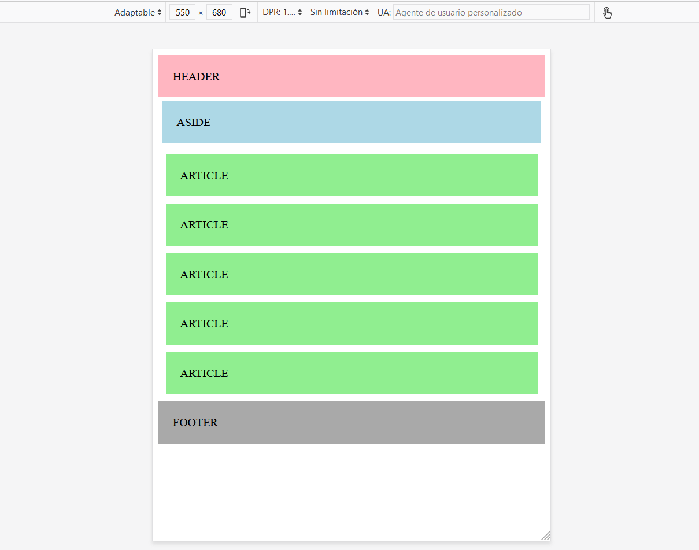

Utilizando únicamente el CSS proporcionado, crea un HTML con el siguiente layout y comportamiento adaptativo.
1. Para anchuras de pantalla mayores de 900px:
El aside ocupará 2 columnas. Los articles ocuparán el espacio restante y se distribuirán en 2 filas de 3 elementos en la primera y 2 en la segunda.
2. Para anchuras de pantalla entre 600px y 900px:
El aside ocupará 3 columnas. Los articles ocuparán el espacio restante y se distribuirán 2+1+1+1.
3. Para anchuras de pantalla menores de 600px:
Todos los elementos ocuparán toda la anchura disponible.
CSS general columnas:
/* For mobile phones: */
[class*="col-"] {
float: left;
width: 100%;
padding: 5px;
}
/* For tablets: */
@media (min-width: 600px) {
.col-s-1 {width: 8.33%;}
.col-s-2 {width: 16.66%;}
.col-s-3 {width: 25%;}
.col-s-4 {width: 33.33%;}
.col-s-5 {width: 41.66%;}
.col-s-6 {width: 50%;}
.col-s-7 {width: 58.33%;}
.col-s-8 {width: 66.66%;}
.col-s-9 {width: 75%;}
.col-s-10 {width: 83.33%;}
.col-s-11 {width: 91.66%;}
.col-s-12 {width: 100%;}
}
/* For desktop: */
@media (min-width: 900px) {
.col-1 {width: 8.33%;}
.col-2 {width: 16.66%;}
.col-3 {width: 25%;}
.col-4 {width: 33.33%;}
.col-5 {width: 41.66%;}
.col-6 {width: 50%;}
.col-7 {width: 58.33%;}
.col-8 {width: 66.66%;}
.col-9 {width: 75%;}
.col-10 {width: 83.33%;}
.col-11 {width: 91.66%;}
.col-12 {width: 100%;}
}CSS para este ejercicio:
* {
box-sizing: border-box;
}
.row::after {
content: "";
clear: both;
display: block;
}
header {
background-color: lightpink;
padding: 20px;
}
aside {
background-color: lightblue;
padding: 20px;
}
article {
background-color: lightgreen;
padding: 20px;
}
footer {
background-color: darkgray;
padding: 20px;
}